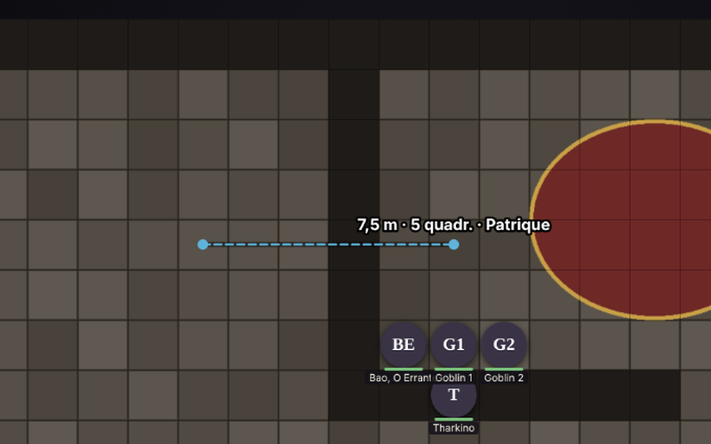

O mapa
- Tokens redondos com a foto do personagem, PV e condições à vista.
- Névoa de guerra que o mestre revela aos poucos. Monstro na névoa nem chega ao jogador.
- Régua e áreas de magia em esfera, cone, linha e cubo, contadas em quadrados de 1,5 m.
- Desenho livre e setas para combinar a tática antes do turno.